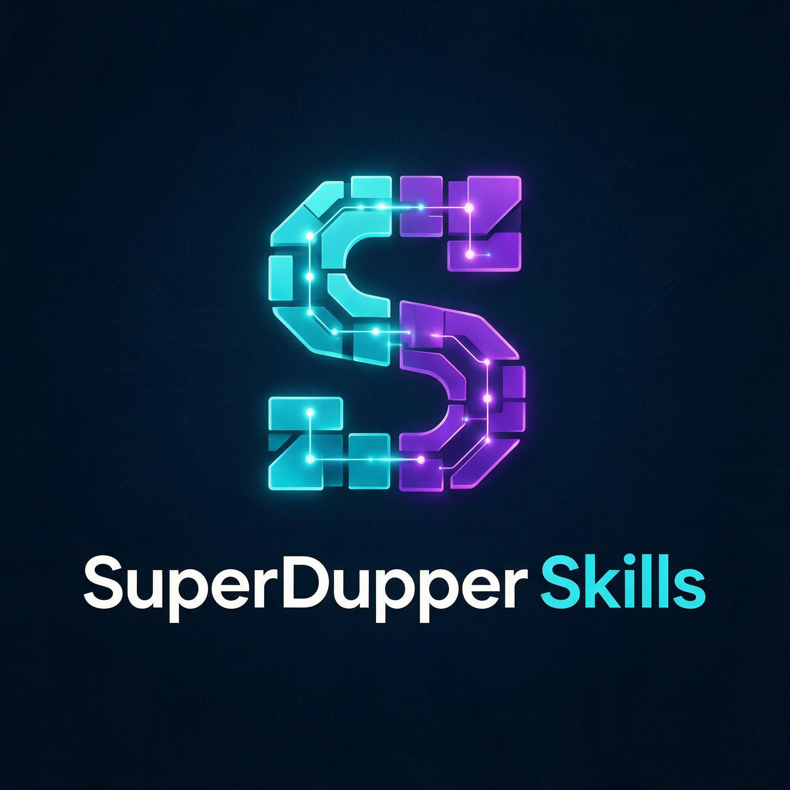

Un catálogo de 2552 skills, no 2552 carpetas sueltas.
SuperDuperSkills recopila, deduplica y categoriza skills de más de 30 fuentes externas verificadas — desde repos de 196 mil estrellas hasta herramientas propias — en un solo bundle instalable.
Categorías
build_index.py · regenerado automáticamenteIntegrations & Automation
824Conectores por app: Ahrefs, Shopify, Apify, Zoho, QuickBooks y más
DevOps & Cloud
234Docker, Kubernetes, Terraform, CI/CD, Cloudflare, deploys, incidentes
Development & Backend
206Lenguajes, frameworks backend, APIs, bases de datos, arquitectura
Engineering Practices
187Workflow de ingeniería, caveman-*, token-*, clean-code, code review
Testing & QA
156Fleet de QA, TDD, coverage, mutation/contract/E2E testing
Project Management
155Pipeline ágil, planning, sprints, retros, roadmaps
AI & Agents
147Servidores MCP, agentes, RAG, prompt engineering
Business & Strategy
145Asesores C-level, estrategia, finanzas, create/grow/improve-app
Marketing & Growth
140Ads en 12 plataformas, CRO, growth, ASO
Design & UX
120Frontend-design, design systems, anti-slop, librería DESIGN.md
Writing & Content
80Copywriting, copy-editing, comunicación interna
SEO & Content
58Keyword research, schema markup, GEO/AI-visibility
Compliance & Legal
37GDPR, SOC2, ISO, auditorías regulatorias
Video & Animation
18GSAP, Lottie, Three.js, producción de video
Productivity & People
25Onboarding, hiring, coaching, cultura, office tools
Sales & Comms
8Cold email, propuestas comerciales, pitch decks
Other
12Remanente genuino: README, TEMPLATE, one-offs sin descripción
Fuentes destacadas
verificadas por estrellas reales, no ranking de búsquedaandrej-karpathy-skillsGuías anti-overengineering derivadas de observaciones de Karpathy sobre LLM codingmattpocock/skillsto-spec, wayfinder, TDD, domain-modeling, code reviewawesome-design-md74 archivos DESIGN.md documentando sistemas de diseño de marcas conocidasclaude-memMemoria y contexto persistente entre sesionesponytailYAGNI aplicado: la escalera de "¿esto necesita existir?" antes de escribir códigoawesome-claude-skillsColección general — descubrir skills y pluginstaste-skillDiseño anti-genérico: brandkit, variantes minimalista y brutalistaCandidatos a instalar
investigado — aún no clonado ni contado en el índice
Sales & Comms (8), Compliance & Legal (37) y SEO & Content (58) son las categorías más
delgadas del bundle. Estas fuentes cubrirían el hueco en la próxima ronda de install.ps1.
sales-skills/salesCRM, outbound, note-takers, enrichment, email marketing, social listeninglouisblythe/Sales-SkillsPlaybooks, ICP, sales call analysis, analytics, sales engineeringSushegaad/Claude-Skills-GRCISO 27001, SOC 2, FedRAMP, GDPR, HIPAA, NIST CSF, PCI DSS, DORA, CMMC 2.0scytale-labs/GRC-Claude-Skills10 skills packaged for engineers, security practitioners, auditorsAgriciDaniel/claude-seo25 sub-skills + 18 sub-agents: technical SEO, E-E-A-T, GEO/AEO, backlinks, local, i18nseranking/seo-skillsContent briefs, AI-search share of voice, backlink gaps, keyword clusters, schemaCómo funciona
Clonar
El repo trae el bundle completo en skills/, listo para instalar sin depender de las fuentes originales.
Instalar
install.ps1 o install.sh copian cada skill al directorio del agente correspondiente.
Confirmar
Un hook SessionStart pregunta qué skills usar por proyecto antes de escribir código — evita cargar de más.